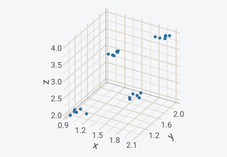
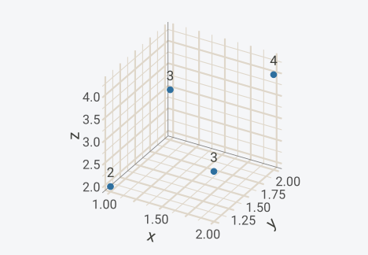
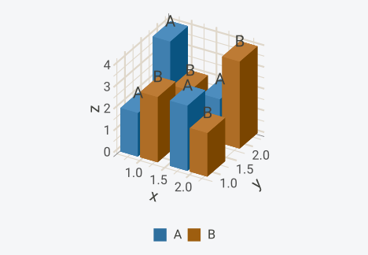
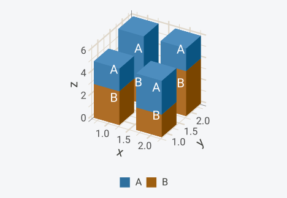
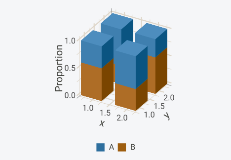

Position adjustments separate marks that share coordinates and arrange groups within each data cell. This article uses repeated observations and grouped columns to show jitter, dodging and stacking, including labels that follow the adjusted positions. Installation and three-dimensional mappings are covered in Get started.
Identify which rows share a position and map their groups.
Choose a position adjustment for the geometry.
Apply the same adjustment to associated labels.
Example
Separating repeated observations
The table below has six observations at each of four x/y positions. Their heights are identical within each position. position_jitter_3d() adds uniform noise within the specified distance on each axis; setting the height to zero preserves the measured heights. A fixed seed makes the displayed positions reproducible.
observations <- expand.grid(x = 1:2, y = 1:2, replicate = 1:6)
observations$z <- observations$x + observations$y
ggplot(observations, aes(x, y, z = z)) +
geom_point_3d(colour = "#2E6F9E", size = 2,
position = position_jitter_3d(width = 0.15, depth = 0.15,
height = 0, seed = 14)) +
coord_3d()
Jitter changes the displayed positions, so the spread in this figure is introduced by the adjustment. Use explicit widths when the spacing between observed values would give an unsuitable default. position_nudge_3d() applies a fixed offset, for example to move labels above their points.
centres <- unique(observations[c("x", "y", "z")])
ggplot(centres, aes(x, y, z = z)) +
geom_point_3d(size = 3, colour = "#2E6F9E") +
geom_text_3d(aes(label = z), size = 5,
position = position_nudge_3d(z = 0.3)) + coord_3d()
Comparing groups within cells
Each x/y cell in the next table contains values for groups A and B. position_dodge_3d() places those groups beside each other along x or y. An explicit shared width keeps the column and text layers aligned.
values <- expand.grid(x = 1:2, y = 1:2, part = c("A", "B"),
stringsAsFactors = FALSE)
values$z <- c(2, 3, 4, 2, 3, 2, 2, 4)
dodge <- position_dodge_3d(axis = "x", width = 0.8)
grouped <- ggplot(values, aes(x, y, z = z, group = part))
grouped +
geom_col_3d(aes(fill = part), width = 0.7, depth = 0.55,
position = dodge) +
geom_text_3d(aes(label = part), position = dodge, vjust = -0.5) +
scale_fill_manual(name = NULL, values = c(A = "#2E6F9E", B = "#9E5E0F")) +
coord_3d()
The default preserve = "total" divides each cell among
its present groups. Choose preserve = "single" to retain
the group width set by the fullest cell when some groups are absent. A
label layer needs the same group mapping and cell membership as its
columns.
Showing totals and proportions
Stacking adds the group values along an axis. position_stack_3d() stacks positive and negative values separately from zero. The text layer uses the same ordering, with its anchor halfway through each interval.
grouped +
geom_col_3d(aes(fill = part), position = position_stack_3d(),
width = 0.6, depth = 0.6) +
geom_text_3d(aes(label = part),
position = position_stack_3d(vjust = 0.5)) +
scale_fill_manual(name = NULL, values = c(A = "#2E6F9E", B = "#9E5E0F")) +
coord_3d()
The fill adjustment divides each positive stack by its total. These data are all positive, so every column ends at one. For signed data, negative values are normalised separately and extend toward minus one.
grouped +
geom_col_3d(aes(fill = part), position = position_fill_3d(),
width = 0.6, depth = 0.6) +
scale_fill_manual(name = NULL, values = c(A = "#2E6F9E", B = "#9E5E0F")) +
scale_z_continuous(name = "Proportion", breaks = c(0, 0.5, 1)) +
coord_3d()
Stacking requires a shared zero baseline and a linear continuous scale along the stacking axis. Positions operate after scale transformation: a nudge of one on a base-ten log scale multiplies the original coordinate by ten. The z scale explains transformations and limits.
Projecting onto panes
To show a cloud’s margins, use position_project_3d(). It projects the layer onto a chosen pane or a plane at a data value. Combining 2D and 3D graphics works through floor and wall projections, including two-dimensional marginal plots.
Position support depends on the geometry. The layer’s help page lists supported adjustments; an unsupported combination reports an error. Layers includes examples of columns, bands and area walls that can be stacked.